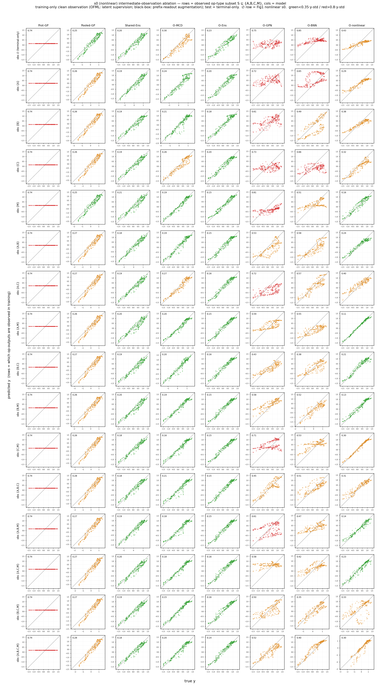

Claim 1 · Intermediate observation repairs the identifiability limit — usable only by compositional models
Observing the intermediate state during training pushes nonlinear \(s0\) — which plateaued under terminal-only — below the floor of the count descriptor, and only compositional models can exploit it. Given the 16 observation subsets \(S\subseteq\{A,B,C,M\}\), the compositional OFML pushes the terminal-only macro NRMSE of 0.579 down to 0.401 across the full trace and to 0.214 with a single \(\{M\}\) observation alone, overtaking every black box. Black boxes, by contrast, do not improve even when the same observations are handed to them as prefix-readout rows (Pooled-GP actually worsens). The repair signal is active only for surrogate models that can represent operators as latent modules, and inactive for flat mappings.

We disentangle whether structure that terminal-only measurement cannot identify can be recovered by observing the intermediate state during training, and which kind of model can exploit it. This figure directly supports Claim 1, "intermediate observation repairs the identifiability limit": nonlinear \(s0\) plateaus under terminal measurement alone (macro NRMSE ≈0.58), and the compositional OFML too stays at about the level of the count-descriptor floor. Given intermediate observation, the compositional OFML overtakes every black box and pushes NRMSE below the count-descriptor floor (OFML-nonlinear 0.579→0.401, and 0.214 with a single \(\{M\}\) observation alone). Black boxes, by contrast, do not improve even when handed the same observation information as prefix-readout, showing that the repair signal is active only for surrogate models that can represent operators. This bisects the terminal-only identifiability limit seen in Figure 1 into "models that can break it / models that cannot" via observation intervention.
The independent variable is the set of operation types \(S\subseteq\{A,B,C,M\}\) at whose positions an observer (measurement module) is placed during training to observe the true 2-dimensional state (all \(2^4=16\) subsets, from empty = terminal-only to the full internal trace \(\{A,B,C,M\}\)). Observation is clean (noise-free) and at training time only, and evaluation is strictly terminal-readout only. Each cell is the average over 16 subsets × 3 seeds. \(S=\varnothing\) reproduces the nonlinear \(s0\) (terminal-only) of Figure 1.
Observers \(O_A,O_B,O_C,O_M\) on the OFML side (compositional model). At the position of each observed operation type op ∈ S we attach a separate per-operation-type learnable observer \(O_{\mathrm{op}}:\mathbb{R}^d\to\mathbb{R}^2\) (bias-free linear), and add the auxiliary loss \(\sum_{\mathrm{op}\in S}\norm{O_{\mathrm{op}}(s_{\mathrm{op}})-s^\ast_{\mathrm{op}}}^2\) to the terminal loss. What \(O_{\mathrm{op}}\) observes is the true 2-dimensional state immediately after that operation is applied, \(s^\ast_{\mathrm{op}}=F^{\dagger}_{\mathrm{op}}(z^{\dagger})\) (post-op, noise-free) — that is, \(O_A\) observes "\((s_0,s_1)\) immediately after applying A" and \(O_M\) observes "the state immediately after applying M". We do not fold these into a single shared alignment; the reason is to remove that gauge freedom (the non-identifiability of contractive/expansive realizations) and to suppress the count \(C^k\) divergence.
Parallel, non-destructive side branch. The compositional main stream propagates the latent \(s\leftarrow g_{\theta_{\mathrm{op}}}(s)\) in its \(d\) dimensions, and a downstream operation (e.g., B) receives the latent \(s\) itself from the preceding stage (e.g., A). \(O_{\mathrm{op}}(s)\) is merely a parallel readout head that maps the latent at that point into 2 dimensions; it only supplies an auxiliary loss and does not rewrite \(s\). Hence adding observation leaves the forward-propagation graph and the composition unchanged, and observation acts only as an additional gradient constraint on the latent (analogous to a non-destructive measurement that does not alter the specimen). In models with \(d>2\) the latent holds more information than the 2 observed dimensions, and \(O_{\mathrm{op}}\) learns that \(d\to2\) projection.
The black-box side has no observer. Because there is no latent module to attach, we supply the same information via a prefix-readout extension — for each observed position \(t\), we add a training row that observes the terminal readout of the prefix protocol op₁ … op_t O as a scalar \(y=\mathrm{readout}(s^\ast_{\text{after }t})\). Thus \(O_A,O_B,O_C,O_M\) are OFML-only, and black boxes receive only the prefix scalar readout (= a "flat" presentation of the same observation information).
* For the metric we use macro NRMSE (normalized by target y-std), consistent with Figure 2. The green (<0.35) / red (>0.8) thresholds of the Figure 6 heatmap are on this NRMSE scale; the old raw-RMSE display has been discontinued. Intermediate observation is at training time only and evaluation is terminal-only — this asymmetry (intervene during training, do not intervene at evaluation) is the sound test condition for the claim that "intermediate observation aids identifiability during learning".
We split the 8 surrogate models into 2 groups. The compositional group (OFML) composes per-operation-type latent modules and can therefore mount the observers \(O_{\mathrm{op}}\), whereas the black-box group has no latent module and can receive the same information only via prefix-readout. This design difference itself determines "who can exploit intermediate observation".
| Model | Group | Structure / latent module | How intermediate observation is received |
|---|---|---|---|
OFML-nonlinear | Compositional | Composes per-operation-type latent modules \(g_{\theta_{\mathrm{op}}}\) + nonlinear readout (capacity-matched to the true family) | Per-operation observer \(O_{\mathrm{op}}\) (parallel side branch) + latent-trace supervision loss |
OFML-Ensemble | Compositional | 5-member deep ensemble of the compositional net (seeds only) | \(O_{\mathrm{op}}\) + auxiliary loss (each member) |
OFML-MCD | Compositional | MC-dropout version of the compositional net (uncertainty via inference-time dropout) | \(O_{\mathrm{op}}\) + auxiliary loss |
OFML-BNN | Compositional | Variational-Bayes compositional net (weight posterior) | \(O_{\mathrm{op}}\) + auxiliary loss |
OFML-GPN | Compositional | Compositional net with a GP output layer (latent→GP readout) | \(O_{\mathrm{op}}\) + auxiliary loss |
Shared-Ens | Black box | MLP ensemble based on operation-count descriptors (order-blind, no latent module) | Prefix-readout extension (prefix scalar rows) |
Pooled-GP | Black box | Single GP pooling all source/target | Prefix-readout extension |
Prot-GP | Black box | Per-protocol GP (protocol embedding) | Prefix-readout extension |
The metric is macro NRMSE. Normalizing by the output scale \(s_p=\mathrm{std}_x f_p(x)\) of target \(p\), \[ \NRMSE_p=\sqrt{\frac{\mathrm{mean}_x\,(\mu_p(x)-f_p(x))^2}{s_p^2}},\qquad \overline{\NRMSE}=\sqrt{\tfrac12\textstyle\sum_{p}\NRMSE_p^2}. \] \(\mu_p\) is the terminal-readout prediction and \(f_p\) is the ground truth (noise-free test). \(\NRMSE=1\) corresponds to the trivial baseline of "predicting the target mean"; the red (>0.8) in Figure 6 is a floor near this, and the green (<0.35) represents the region where identification has recovered. The reported architecture is traceablation2 (selected by BO combining count stability + order identification).
We reuse s0 success (nonlinear family) (9 source protocols, target A B C M O / C B A M O). In addition, the independent variable is the subset of operation types \(S\subseteq\{A,B,C,M\}\) observed at training time only (all 16) (evaluation is terminal-only). \(S=\varnothing\) reproduces the nonlinear s0 of Figure 1.
| Element | Value | Property |
|---|---|---|
| source protocol | 9 (singletons + both-order pairs) | s0 success reuse, with noise \(\sigma=0.02\) |
| target | 2 (A B C M O / C B A M O) | same count, different order (exposes order-blind aliasing) |
| intermediate observation \(S\) | \(S\subseteq\{A,B,C,M\}\), all 16 subsets (\(\varnothing\) … \(\{A,B,C,M\}\)) | training time only, clean (noise-free) |
| observed ground truth | \(s^\ast_{\mathrm{op}}=F^{\dagger}_{\mathrm{op}}(z^{\dagger})\) (post-op) | OFML: \(O_{\mathrm{op}}\) / BB: prefix-readout |
| evaluation | terminal readout only (ground truth) | noise-free (no train-on-test) |
| repetitions | 16 subsets × 3 seeds | each cell = 3-seed average |
OFML-nonlinear is capacity-matched): FA=(2σ(2.4s₀−0.8s₁+0.1)−0.8, s₁), FB=(s₀, 2σ(2.0s₁+0.7s₀−0.2)−0.8), FC=(1.2·ss(2.2s₀+0.8s₁−1.0), 1.2·ss(2.0s₁−0.6s₀−0.6)) (contractive, Lipschitz<1), FM=(s₀+0.4tanh(s₀−s₁), s₁+0.4tanh(s₀+s₁)), FO=id, readout y=1.4·ss(2s₀−1.6s₁+1.2s₀s₁−0.1)+0.25·sin(2π(s₀−s₁)) (the high-frequency sin term is an irreducible lower bound on difficulty). 4 variants: nonlinear_shifted(s2) / nonlinear_lipschitz(s5, expansive M) / nonlinear_misspecified(s6) / nonlinear_three_body(s7, target-only three-body term +2.2s₀s₁+…).Placing the cursor over a module type highlights the same shared operation across all protocols (= weight sharing). Selecting S in the widget makes the non-destructive observer's side branch appear immediately after that operation type.
The table below contrasts the target macro NRMSE of nonlinear \(s0\) at \(\varnothing\) (terminal-only), the full trace \(\{A,B,C,M\}\), and the best subset (out of all 16). At \(\varnothing\) the compositional OFML stays at or above the level of the black boxes' count-descriptor floor (Shared-Ens 0.275, Pooled-GP 0.335) (OFML-Ens 0.317, OFML-nonlinear 0.579) — exactly the terminal-only identifiability limit of Figure 1. When intermediate states are observed, all compositional models break the floor and fall well below the black boxes' lower bound (OFML-nonlinear 0.579→0.401, and moreover 0.214 with a single \(\{M\}\) observation alone, reaching the best among all 16 subsets; OFML-Ens 0.317→0.195, OFML-MCD 0.410→0.267). By contrast, black boxes do not improve even when given the same observations as prefix-readout rows: Pooled-GP actually worsens (0.335→0.374), Prot-GP is essentially flat (1.009→1.003), and Shared-Ens improves only slightly (0.275→0.250).
| Group | Model | \(\varnothing\) (terminal-only) | Full trace \(\{A,B,C,M\}\) | Best subset (\(S\)) |
|---|---|---|---|---|
| Compositional (OFML) | OFML-nonlinear | 0.579 | 0.401 | 0.214 (\(\{M\}\) single, best) |
| OFML-Ensemble | 0.317 | 0.195 | 0.195 (\(\{A,B,C,M\}\)) | |
| OFML-MCD | 0.410 | 0.267 | 0.267 (\(\{A,B,C,M\}\)) | |
| OFML-BNN | 1.154 | 0.546 | 0.546 (\(\{A,B,C,M\}\)) | |
| OFML-GPN | 1.012 | 0.704 | 0.704 (\(\{A,B,C,M\}\)) | |
| Black box | Shared-Ens | 0.275 | 0.250 | 0.250 (\(\{A,B,C,M\}\)) |
| Pooled-GP | 0.335 | 0.374 (worse) | 0.335 (\(\varnothing\)) | |
| Prot-GP | 1.009 | 1.003 (flat) | 1.003 (\(\{A,B,C,M\}\)) |
OFML-nonlinear improves most when the mixer \(M\) is observed (0.214 with a single \(\{M\}\)). This is because the nonlinear difficulty of \(s0\) is concentrated in \(M\) (the cross term tanh(s₀±s₁)): directly observing its output fixes the latent frame and is more effective than additionally observing other operation types — even falling below the full-trace 0.401. That is, the essence of intermediate observation is not "the more you observe, the better" but "observing the identification bottleneck".
Under terminal measurement alone, for nonlinear \(s0\) the black boxes' count descriptors (Shared-Ens 0.275, Pooled-GP 0.335) create a floor, and the compositional OFML too stays at about that level — exactly the terminal-only identifiability limit seen in Figure 1. When the intermediate state is observed during training, that floor is broken only for compositional models: OFML-nonlinear goes 0.579→0.401 (0.214 with a single \(\{M\}\)) and OFML-Ens goes 0.317→0.195, falling well below the black boxes' lower bound. The decisive point is that black boxes given the same observation information as prefix-readout rows do not improve (Pooled-GP worsens, Prot-GP is flat, Shared-Ens only slightly). In other words, the identification signal brought by intermediate observation is active only for surrogate models that can represent operators as latent modules, and inactive for flat mappings. That observing the mixer \(M\) is most effective (single \(\{M\}\) 0.214) gives the mechanistic explanation that the nonlinear difficulty is concentrated in \(M\) and observing its output fixes the latent frame. All of this directly supports Claim 1.
Read together with the sibling experiments: for the linear version where intermediate observation aids identification of protocol order, see Figure 6 (order, linear); for terminal-only forward transfer itself, see Figure 1; for its positioning under the cost-indexed view and active observation, see Figure 2.
* Limitation: intermediate observation is an idealization (training time only, clean/noise-free), and evaluation is terminal-only. In practice, intermediate observation also incurs noise and cost (for cost-bearing active observation, see Figure 2). The black boxes' prefix-readout is an extension of the scalar terminal readout and does not directly supply the latent 2-dimensional state — therefore, "black boxes do not improve" is a conclusion under the same observation protocol, not the same amount of information. Each cell is a 3-seed average, NRMSE is a terminal evaluation over 256 test points, and the color thresholds use target-y-std normalization.
Intermediate observation (partial evaluation of internal nodes) improves the Lipschitz bridge coefficient \(\Lambda_{p_\star,q}\) and the approximate-inference error \(d_{\Delta,n}\), relaxing the identifiability limit that accompanies depth (Proposition 6, Lemma 6). The reason only compositional models can exploit intermediate observation is that they possess the pushforward latent module \(g_{\theta_{\mathrm{op}}}\) and can connect the observer \(O_{\mathrm{op}}\) to that latent (a flat mapping has no internal latent to connect to). That observing the mixer \(M\) alone is most effective is consistent with the depth-limit picture of Proposition 6, in which the bottleneck of the bridge coefficient is concentrated in the nonlinear composition of \(M\).